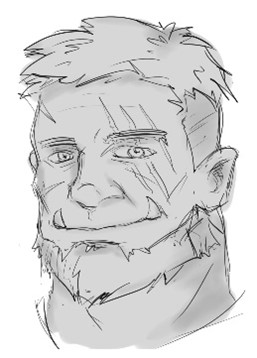

Session 3
28 January 2023
Notes
We woke up the next morning and departed Yussa's castle to spend the day in Nicodranas at a few different stores.
We ventured into The Opal Archway to Barons, Brews, & Buns and looked for books that could help us learn about the region and the races who roam the area in hopes to gain insight in the killer of my family. I purchased two books: Draconia and Dwendalian Empire.
Then we walked over to The Open Quay to Sea Floors Bounty where we met Deezma.
After the general store we decided to head back up to The Opal Archway to check out Bereto's Oils & Elixirs. After talking with Bereto for a bit, we learned that his mom, Sereto Bereto, lives in Zadash and teachs at the big school there. He explains that she loves pranks and left behind a chest that he swears has good stuff in it. I break into it for him only to discover it was full of clothing. I took a few outfits in anticipation I might need them later. Cornelius also decided to take a bunch of clothing (of which he sold later for some coin).
We eventually made our way back to Yussa for him to fill us in with the remaining information we were looking for. He told us that Draconic incantations have not been used since the betrayer Gods during the calamity. Meant to be messages to their followers. Also used to control people. Now Draconic incantation are outlawed. During calamity cities were attacked, not small places. This ring was worn by:
He is a Half-Orc and is wearing clothing from Zadash. Yussa then requests to hold on to the ring to further analyze its history, to check if this inscription is old or new. Then he requested to capture the person to get more information from them. He then gave us a sending stone so we can communicate with him.
Loot
| Item | Given By/Bought | Who has it | Properties |
|---|---|---|---|
| Draconia | Bought from Barons, Brews, & Buns | Lyle | Book on Draconia which will take me approximately 4 hours to read. |
| Dwendalian Empire | Bought from Barons, Brews, & Buns | Lyle | Book on Dwendalian Empire which will take me approximately 12 hours to read. |
| Strange Metal Tin | Found in Yussa's tree tower living space | Lyle | Contains a thick whitish cream, with odd brightly coloured arcane symbols on the front. It has 7 uses. A creature with hair on their head may use the cream once a day to make themselves appear more cool and sexy, giving them a +1 to any charisma checks or saves they have to make (the magical nature of the gel gives this bonus even when it's an effect caused by a spell or a creature that doesn't find a head of perfectly styled hair sexy.) This takes 5 minutes and cannot be done in combat (well it can but it's probably not the best use of your time). The effect lasts for one full day or until you take a long rest. However, any time you take fire damage while using the cream, roll a D6. On a roll of 1, the cream ignites and you take a further 2d6 fire damage and have a -1 to all charisma checks and saves for the next d4+1 days while your hair regrows, and cannot use the cream again until then. |
| Arcane Kettle | Found in Yussa's tree tower living space | Lyle | Arcane Brew. When a creature drinks tea brewed with this kettle, they become the subject of a random arcane effect; roll on the Arcane Effect table to
determine what happens. Non-instantaneous effects last for 8 hours or until dispelled. For the purpose of dispelling, these magical effects are
considered 9th-level spells. If the effect grants the drinker a spell, or causes a spell to be cast, the ability modifier for these spells is Intelligence. Arcane Effect table. When rolling on the Arcane Effect table, roll a d8 to determine the school of magic, then flip a coin (or a roll a die) to determine whether the effect is good or bad. |
| Flask of Endless Ale | Found in Yussa's tree tower living space | Hee | You can use an action to remove the stopper and speak one of three command words, whereupon an amount of ale (your choice) pours out of the flask.
The ale stops pouring out at the start of your next turn. Choose from the following options:
|
| Bag of Bacon | Found in Yussa's tree tower living space | Hee | When you reach into this bag you pull out 1d8 pieces of bacon every time. 1 piece of bacon is worth 100 gp and provides 10 days of food and water to any creature, giving a creature a -9 to a subsequent days without food and water count. |
| Ball of Gravity Detection | Found in Yussa's tree tower living space | Lyle | While it looks like any other ball, this magic ball aids in the detection of gravitational fields. When released in the presence of such a field, it moves under influence of the field until such time as it is stopped by an item, creature, the terrain, or another solid object. |
| Le Roc Shield | Found in Yussa's tree tower living space | Cornelius | ADD THE INFO HERE |
| Magic Shortbow | Given by Yussa for defeating Noke | Lyle | This shortbow saps the life of your enemies and bolsters your life force. When you attack a creature with this shortbow and roll a natural 20 on the attack roll, that target takes an extra 10 necrotic damage if it isn't a construct or an undead. You also gain 10 temporary hit points with a maximum of 30 temporary hit points. |
| Twin Daggers | Given by Yussa for defeating Noke | Lyle | These twin daggers are made of ebony steel with onyx pommels. Carved into each blade is the figure of a raven. You gain a +1 bonus to attack and damage rolls made with these magic weapons. While wielding one dagger, the user may throw the other as a bonus action, after which the user will instantly teleport to its location, catch it, and attack the nearest creature. If you hit with this attack, the dagger deals an extra 1d4 piercing damage. |
| Sending Stone | Given by Yussa to communicate with him about the Ring | Lyle | Sending Stone: Sending stones come in pairs, with each smooth stone carved to match the other so the pairing is easily recognized.
While you touch one stone, you can use an action to cast the sending spell from it. The target is the bearer of the other stone.
If no creature bears the other stone, you know that fact as soon as you use the stone and don't cast the spell. Once sending is cast
through the stones, they can't be used again until the next dawn. If one of the stones in a pair is destroyed, the other one becomes nonmagical. Sending - You send a short message of twenty-five words or less to a creature holding the stone. The creature hears the message in its mind, recognizes you as the sender if it knows you, and can answer in a like manner immediately. The spell enables creatures with Intelligence scores of at least 1 to understand the meaning of your message. You can send the message across any distance and even to other planes of existence, but if the target is on a different plane than you, there is a 5 percent chance that the message doesn't arrive. |
NPCs
| Name | Race/Class | Gender | Met/Location | Quests | Remarks/Notes |
|---|---|---|---|---|---|
| Deezma | Human? | Male | Nicodranas - The Open Quay district | None | Owner of Sea Floors Bounty General Store. Susceptible to a sad story. Gave me a good discount because of my background |
| Bereto | Wizard | Male | Nicodranas - The Open Archway district in Bereto's Oils & Elixirs | Talk with his mom, Sereto, in Zadash | Owner of Bereto's Oils & Elixirs. Crazy wizard who is angry at his mom for the pranks she pulls on him. |
Locations
| Name | Description |
|---|---|
| The Opal Archway | A district in the center of Nicodranas with blue opal archways as entrances. The district itself is high end with stone walkways and elven castle-like buildings. |
| Barons, Brews, & Buns | |
| The Open Quay | The middle-class location in Nicodranas. Multiple tent vendors and clay/brick buildings throughout. There's a very tall tower in the center behind the Crosswands Inn, where we all met each other. |
| Sea Floors Bounty | Nicodranas general store inside The Open Quay district. Owned by Deezma who gave us a descent discount due to my sad backstory. |
Quests
| Given by | Information |
|---|